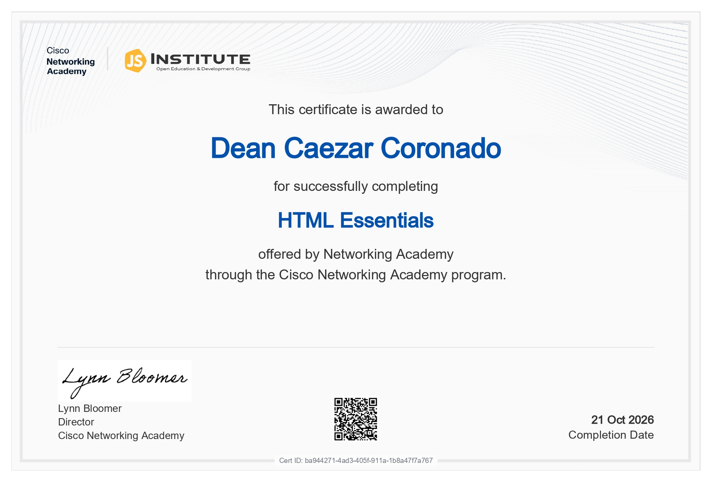
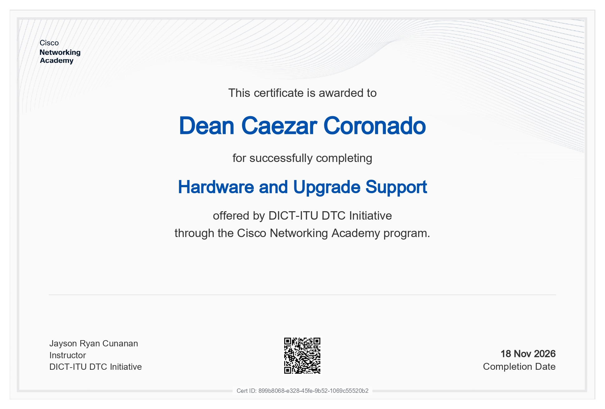
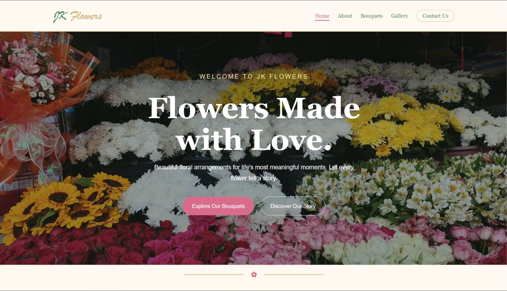

Welcome
Hi! Welcome to my personal portfolio website. I hereby to showcase my academic school activities, coding outputs, multimedia editing projects, and ongoing learning journey as an IT freshman.
About Me
I am Dean Caezar D. Coronado, a first year BSIT student who loves figuring out how software systems and networks work. Graduating under the STEM track in Senior High School helped me build logical habits in solving problems, which I now use when writing code and designing layouts.
I like exploring computer hardware components, doing video edits, and trying out simple web projects that could help local stores.
Web Development
Writing HTML elements and organizing custom CSS rules manually
Media Integration
Handling digital assets, video clips, and visual arrangements
Problem Solving
Applying analytical thinking and debugging logic learned from STEM
Academic Growth
Learning core IT concepts and modern web standards step-by-step
Education
Bukidnon State University
Malaybalay City, Bukidnon | 2026
Bachelor of Science in Information Technology. Studying core programming, system architecture, and web design principles.
Bukidnon National High School Senior High School Campus - STEM Strand
Science, Technology, Engineering, and Mathematics | Graduate
Finished senior high school with honors, gaining a strong background Sin mathematics, scientific logic, and systematic problem solving.
Certifications and Achievements

HTML Essentials
Certified through Cisco Networking Academy program. Validates foundational knowledge in webpage markup, structure, and web standards.

Hardware and Software Support
Certified through Cisco Networking Academy program. Covers computer hardware troubleshooting, system diagnostics, and software maintenance.
Projects
Showcase of academic web designs and multimedia outputs built to support local business promotion and cultural tourism.

Business Website
We build a website that showcase their product clearly to help customers shop easily.
Skills and Competencies
Hardware and Software Support
Troubleshooting PC errors, setting up computer parts, and managing software applications.
HTML and CSS Basics
Building semantic web structures and writing clean style rules from scratch.
Video Editing
Trimming video footage, mixing audio, and setting up smooth visual transitions.
Problem Solving
Finding syntax errors, testing layouts, and working through coding bugs.
My Learning Goals
- Further programming concept and basic scripting
- Enhance my mobile layout and editing
Contact Me
I am open to school collaborations, group projects, and academic discussions. Feel free to reach out through my links below!